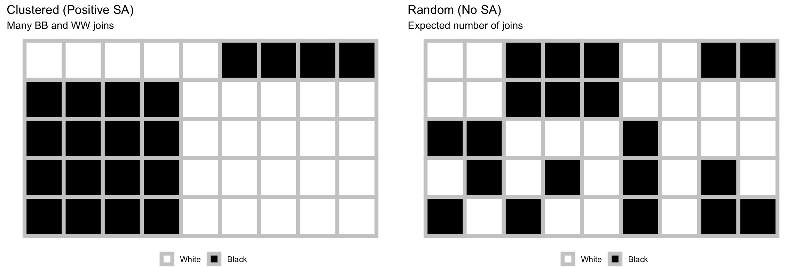
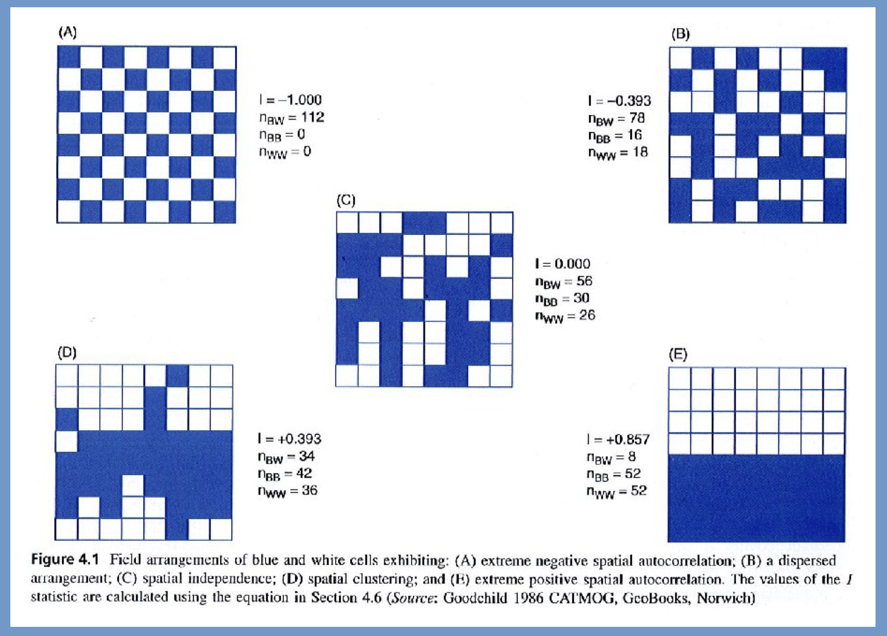
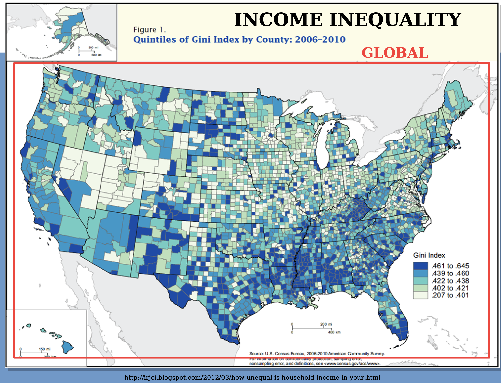
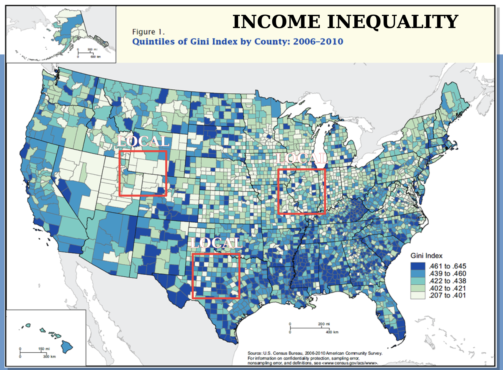
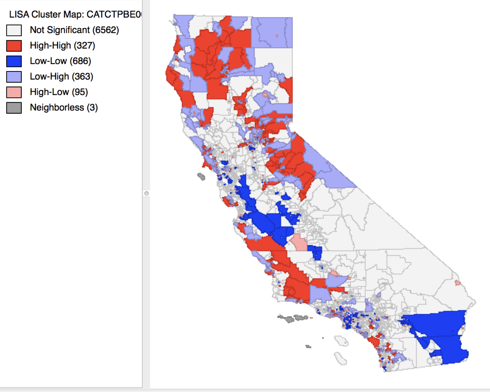

| Area | A | B | C | D |
|---|---|---|---|---|
| A | 0 | 1 | 1 | 0 |
| B | 1 | 0 | 0 | 1 |
| C | 1 | 0 | 0 | 1 |
| D | 0 | 1 | 1 | 0 |
Exploratory Spatial Data Analysis
Area Pattern Analysis #3
Varun Goel
Sep 29, 2026
Lecture 3: Area Pattern Analysis
Transition: Points to Areas
Point Pattern Data
- Discrete events/objects
- \((x, y)\) coordinates
- Questions:
- Clustered or dispersed?
- Random spacing?
Methods
- Nearest Neighbor
- Quadrat Analysis
Areal Pattern Data
- Continuous spatial units
- Polygons (counties, tracts, regions)
- Questions:
- Do adjacent areas have similar values?
- Spatial clustering of attributes?
Methods (Today)
- Join Count Analysis
- Moran’s I (global & local)
What is Areal Data?
Definition
Attributes measured or aggregated over spatial units
Characteristics
- Complete coverage of study area
- Mutually exclusive units
- Values represent entire area (not points)
- Neighborhood structure defined by adjacency/proximity
What is Areal Data?
Examples
| Domain | Spatial Unit | Variable |
|---|---|---|
| Public Health | Counties | Disease rate |
| Economics | States | Unemployment |
| Politics | Precincts | Vote share |
| Environment | Watersheds | Pollution level |
| Demography | Census tracts | Median income |
Key Difference from Point Patterns

Point patterns: Location of events is the variable
Areal data: Attribute values across locations
Spatial Autocorrelation
Core Concept
Tobler’s First Law of Geography
“Everything is related to everything else, but near things are more related than distant things.”
Spatial Autocorrelation Defined
Correlation of a variable with itself across space
- Positive: Similar values cluster spatially
- High near high, low near low
- Negative: Dissimilar values are adjacent
- High near low, low near high
- Zero: No spatial pattern (independence)
Why Spatial Autocorrelation Matters
Theoretical Importance
- Diffusion processes: Contagion, influence, spread
- Common exposures: Environmental factors affect neighbors
- Spatial spillovers: Economic/social interactions
Why Spatial Autocorrelation Matters
Practical Applications
- Identify spatial clusters (hot spots)
- Disease surveillance
- Environmental justice
- Economics (Real estate), Political Science etc etc.
Why Spatial Autocorrelation Matters
Statistical Implications
- Violates independence assumption of classical statistics
- Standard errors underestimated
- Significance tests invalid
- Need spatial statistical methods
Defining Spatial Neighbors
Fundamental Question
Who is a neighbor? This defines the spatial structure!
Common Approaches
- Contiguity (shared boundary)
- Rook: Shared edge
- Queen: Shared edge or vertex
- Higher-order: Neighbors of neighbors
- Distance
- Fixed distance threshold
- K-nearest neighbors
- Inverse distance weighting
- Other
- Graph-based (networks), Time-based (diffusion)
Contiguity Definitions: Visual

Example: Simple Weights Matrix
Interpretation: - A is neighbor to B and C - B is neighbor to A and D - C is neighbor to A and D - D is neighbor to B and C
Join Count Analysis
Learning Check
Two maps contain the same number of “black” and “white” areas. Map A has substantially fewer black-white joins than expected, while Map B has substantially more. Describe the spatial pattern represented by each map and explain why.
A study finds a nonsignificant global Moran’s I but identifies several significant local Moran’s I values. Is this possible? Explain what the global and local statistics measure differently.
Join Count Analysis: Introduction
Purpose
Analyze spatial patterns of CATEGORICAL data
Key Concept
A “join” is a connection between two adjacent areas
Types of Joins
| Join Type | Description |
|---|---|
| Black-Black (BB) | Two adjacent “black” areas |
| White-White (WW) | Two adjacent “white” areas |
| Black-White (BW) | Adjacent areas with different categories |
The Question
Are there more same-category joins than expected by chance?
Join Count: The Logic
Observed vs. Expected
Observed: Count actual joins in the data
Expected: What would we expect under random arrangement?
Hypotheses
- \(H_0\): Spatial pattern is random (no spatial autocorrelation)
- \(H_A\): Clustering exists
- Positive autocorrelation: More BB and WW joins than expected
- Negative autocorrelation: More BW joins than expected
Join Count: Visual Example

Join Count: Test Statistic
Z-Score
\[Z_{join} = \frac{O_{BW} - E_{BW}}{\sigma_{BW}}\]
where: - \(O_{BW}\) = observed number of Black-White joins - \(E_{BW}\) = expected number under randomness
Interpretation
- Positive \(Z\): More BW joins than expected (negative SA)
- Negative \(Z\): Fewer BW joins than expected (positive SA / clustering)
- \(|Z| > 1.96\) → Significant at \(\alpha = 0.05\)
Join Count Example: US Obesity
From your reading: State obesity levels 1995-2020
Setup
- States classified as above or below national average
- Queen contiguity weights
- Binary categorization per year
Results (2020)
| Join Type | Observed | Expected |
|---|---|---|
| Above-Above | 26 | 21 |
| Below-Below | 27 | 32 |
| Dissimilar | 22 | 53.75 |
Test: \(Z = -6.40\), \(p < 0.001\)
Conclusion: Significant positive spatial autocorrelation
States with similar obesity levels cluster together
Join Count: Interpretation Tips
What Positive SA Means
- Similar values cluster spatially
- Neighbors tend to be alike
- Evidence of:
- Diffusion processes
- Common exposures
- Spatial spillovers
Join Count: Interpretation Tips
What Negative SA Means (Rare)
- Dissimilar values adjacent
- “Checkerboard” pattern
- Possible:
- Competition effects
- Complementarity
- Zoning/planning
Non-Significance
- Random spatial arrangement
- No evidence of spatial pattern
- Independence assumption reasonable
Moran’s I
Moran’s I: Introduction
Purpose
Measure spatial autocorrelation for CONTINUOUS data
Key Differences from Join Count
- Join Count: Categorical (black/white, yes/no)
- Moran’s I: Continuous (income, temperature, rates)
Global Moran’s I
- Single value summarizing spatial autocorrelation for entire study area
- Analogous to Pearson correlation, but for spatial data
Range
- Typically: \(-1 \leq I \leq +1\)
- \(I > 0\): Positive SA (clustering of similar values)
- \(I \approx 0\): No SA (random)
- \(I < 0\): Negative SA (dissimilar values adjacent)
Moran’s I: Example

Moran’s I: Example

Moran’s I: Intuition
What It Calculates
Product of deviations for neighboring areas
Positive I (Clustering)
- High values near high values: \((+)(+) = +\)
- Low values near low values: \((-)(-) = +\)
- Cross-products tend to be positive
Negative I (Dispersion)
- High values near low values: \((+)(-) = -\)
- Low values near high values: \((-)(+) = -\)
- Cross-products tend to be negative
Random (I ≈ 0)
- Mix of positive and negative cross-products
- Cancel out on average
Moran’s I: Worked Example
Pennsylvania County Obesity Levels (from reading)
Setup
- \(n = 67\) counties
- Variable: Obesity rate (%)
- Queen contiguity weights
Results
| Statistic | Value |
|---|---|
| Moran’s I | 0.69 |
| Expected I | -0.015 |
| Variance | 0.0043 |
| Z-score | 10.8 |
| p-value | < 0.001 |
Interpretation: Strong positive spatial autocorrelation
Counties with similar obesity rates cluster together
Global vs. Local Measures
Global Moran’s I
- One value for entire study area
- “Is there clustering?”
- Like a correlation coefficient
- Summary statistic
Limitations
- Doesn’t tell you WHERE
- May miss local variation
- Average over whole area
Local Moran’s I (LISA)
- One value per area
- “Where is clustering?”
- Identifies hot spots / cold spots
- Spatial outliers
Advantages
- Maps of local patterns
- Identifies specific locations
- Heterogeneous patterns
Tip
Use global to test for overall SA, then local to find where
Local Moran’s I (LISA)
Local Moran’s I (LISA)

Local Moran’s I (LISA)
Formula
\[I_i = \frac{(x_i - \bar{x})}{S_i^2} \sum_{j} w_{ij}(x_j - \bar{x})\]
where: - \(I_i\) = local Moran’s I for area \(i\) - \(S_i^2 = \frac{\sum (x_i - \bar{x})^2}{n}\) (variance) - \(w_{ij}\) = spatial weights
Interpretation for Area \(i\)
- High positive \(I_i\): Area similar to neighbors
- High-High: High value surrounded by high
- Low-Low: Low value surrounded by low
- Negative \(I_i\): Area different from neighbors
- High-Low: High value surrounded by low (outlier)
- Low-High: Low value surrounded by high (outlier)
LISA: Cluster Types

LISA: Cleveland Racial Composition
Example from reading: Census block groups
Four Groups Analyzed
- Asian, Black, White, Hispanic
Key Findings (Moran’s I values)
| Group | Moran’s I | Z | p-value | Interpretation |
|---|---|---|---|---|
| Asian | 0.35 | 18.39 | 0.000 | Moderate clustering |
| Black | 0.58 | 64.6 | 0.000 | Strong clustering |
| White | 0.64 | 65.4 | 0.000 | Strong clustering |
| Hispanic | 0.81 | 65.7 | 0.000 | Very strong clustering |
Conclusion: Significant residential segregation across all groups
Hispanic communities most strongly clustered
Comparing Area Pattern Methods
| Feature | Join Count | Moran’s I |
|---|---|---|
| Data type | Categorical | Continuous |
| Output | Join counts | Correlation-like index |
| Range | Count values | -1 to +1 |
| Interpretation | Number of joins | Degree of autocorrelation |
| Local version | No standard version | LISA (Local Moran’s I) |
| Use cases | Land use, binary outcomes | Rates, prices, densities |
Complementary Approaches
- Both test spatial autocorrelation
- Both require defining neighbors
- Both compare observed to expected under randomness
Practical Applications
Public Health
- Disease mapping: Identify disease clusters
- Health disparities: Unequal access to care
- Outbreak detection: Early warning systems
Urban Planning
- Gentrification: Spreading neighborhood change
- Segregation: Residential clustering by race/income
- Housing markets: Price spillovers
Environmental
- Pollution: Clustering of environmental hazards
- Environmental justice: Disproportionate exposure
- Climate adaptation: Regional vulnerability
Economics
- Unemployment: Regional labor markets
- Innovation: Technology spillovers
- Poverty: Persistent spatial poverty traps
Common Issues and Solutions
Issue 1: Modifiable Areal Unit Problem (MAUP)
- Results sensitive to zone definition
- Solution: Test multiple aggregations, report sensitivity
Issue 2: Boundary Definition
- Edge areas have fewer neighbors
- Solution: Consider broader study area, report boundary effects
Issue 3: Choosing Neighbors
- Contiguity vs. distance? Rook vs. Queen?
- Solution: Test multiple definitions, justify choice theoretically
Issue 4: Statistical vs. Practical Significance
- Large samples → everything significant
- Solution: Report effect sizes (Moran’s I value), visualize
Assumptions and Limitations
Key Assumptions
- Stationarity: Process constant across space
- May not hold in heterogeneous regions
- Isotropy: Relationships same in all directions
- Geographic barriers may violate this
- Appropriate neighborhood definition
- Neighbors must be meaningful
- Independence of areas (for inference)
- Actually violated if SA exists! (parametric bootstrap helps)
Limitations
- Descriptive, not causal
- Cannot distinguish processes (multiple processes → same pattern)
- Scale-dependent (MAUP)
Advanced Topics (Brief Overview)
Other Spatial Autocorrelation Measures
- Geary’s C: More sensitive to local differences
- Getis-Ord G: Hot spot analysis
- Spatial correlogram: SA at multiple distances
Spatial Regression Models
- When SA exists, OLS invalid
- Spatial lag model: Y depends on neighbor Y
- Spatial error model: Errors spatially correlated
Space-Time Analysis
- Extend to temporal dimension
- Emerging/declining clusters
- Knox test, Space-time scan statistics
Best Practices Summary
Workflow for Area Pattern Analysis
- Visualize: Create choropleth maps
- Define neighbors: Justify choice
- Test globally: Join Count or Moran’s I
- If significant, test locally: LISA
- Map results: Show cluster locations
- Interpret substantively: Connect to theory/process
Best Practices Summary
Reporting Checklist
✓ Study area definition and rationale
✓ Neighborhood definition (rook/queen/distance)
✓ Weighting scheme (binary/row-standardized)
✓ Global test results (statistic, p-value)
✓ Local analysis (if applicable)
✓ Maps of patterns
✓ Substantive interpretation

Quantitative Methods in Geographic Research